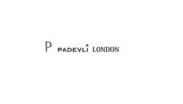

Trade Mark Journal No.2025/033 15 August 2025
UK00004245481 6 August 2025 (25)

- Class 25
- Clothing; Knitwear [clothing]; Jackets [clothing]; Ready-to-wear clothing; Woolen clothing; Furs [clothing]; Garments for protecting clothing; Layettes [clothing]; Clothing layettes; Linen clothing; Headbands [clothing]; Headbands for clothing; Gloves [clothing]; Gloves as clothing; Clothes; Aprons [clothing]; Maternity clothing; Kerchiefs [clothing]; Jerseys [clothing]; Denims [clothing]; Shorts [clothing]; Cashmere clothing; Capes (clothing); Oilskins [clothing]; Gabardines [clothing]; Silk clothing; Leather clothing; Clothing of leather; Leather (Clothing of -); Collars [clothing]; Parts of clothing, footwear and headgear; Veils [clothing]; Knitted clothing; Windproof clothing; Hoods [clothing]; Corsets [clothing, foundation garments]; Embroidered clothing; Wristbands [clothing]; Bandeaux [clothing]; Belts [clothing]; Belts for clothing; Waterproof clothing; Rainproof clothing; Casual clothing; Visors [clothing]; Jackets being sports clothing; Jackets (Stuff -) [clothing]; Stuff jackets [clothing]; Bottoms [clothing]; Ready-made clothing; Clothing for leisure wear; Playsuits [clothing]; Latex clothing; Woven clothing; Trunks being clothing; Infant clothing; Leisure clothing; Clothing for sports; Sports clothing; Athletic clothing; Drawers [clothing]; Drawers as clothing; Ties [clothing]; Clothing for children; Muffs [clothing]; Bodies [clothing]; Clothing for babies; Tops [clothing]; Clothing for infants; Weatherproof clothing; Clothing for cycling; Water-resistant clothing; Fabric belts [clothing]; Triathlon clothing; Pockets for clothing; Handwarmers [clothing]; Clothing for skiing; Beach clothing; Thermal clothing; Chaps (clothing); Cowls [clothing]; Men's clothing; Fishing clothing; Mitts [clothing]; Dance clothing; Braces for clothing; Shoes; Insoles for shoes and boots; Insoles [for shoes and boots]; High-heeled shoes; Wooden shoes [footwear]; Dress shoes; Sneakers [footwear]; Slip-on shoes; Leather shoes; Tongues for shoes and boots; Tennis shoes; Jogging shoes; Ballet shoes; Esparto shoes or sandals; Walking shoes; Rubber shoes; Shoes soles for repair; Hiking shoes; Pullstraps for shoes and boots; Esparto shoes or sandles; Basketball shoes; Athletic shoes; Running shoes; Volleyball shoes; Sandals and beach shoes; Soccer shoes; Sneakers; Waterproof shoes; Shoe soles; Heel pieces for shoes; Dance shoes; Snowboard shoes; Canvas shoes; Wooden shoes; Shoes for foot volleyball; Foot volleyball shoes; Cycling shoes; Shoes for leisurewear; Platform shoes; Sports shoes; Golf shoes; Footwear soles; Soles for footwear; Athletics shoes; Sport shoes; Yoga shoes; Mountaineering shoes; Hockey shoes; Baby shoes; Roller shoes; Insoles for footwear; Baseball shoes; Riding shoes; Bowling shoes; Gymnastic shoes; Football shoes; Rain shoes; Training shoes; Aqua shoes; Boxing shoes; Fittings of metal for boots and shoes; Handball shoes; Skiing shoes; Beach shoes; Flat shoes; Nursing shoes; Shoes for casual wear; Leisure shoes; Shoes for infants; Stiffeners for shoes; Rugby shoes; Heel protectors for shoes; Work shoes; Women's shoes; Footwear; Flip-flops for use as footwear; Tap shoes; Hidden heel shoes; Apres-ski shoes; Deck shoes; Driving shoes; Pumps [footwear]; Shoe soles for repair; Infants' shoes; Sandals; Spiked running shoes; Studs for football shoes; Anglers' shoes; Cleats for attachment to sports shoes; Boots; Trainers [footwear]; Shoe straps; Protective metal members for shoes and boots; Inner socks for footwear; Rubbers [footwear]; Wedge sneakers; Shoe uppers; Basketball sneakers; Knitted baby shoes; Swaddling clothes; Baby clothes; Beach clothes; Nappy pants [clothing]; Work clothes; Clothes for sports; Clothes for sport; Babies' pants [clothing]; Gussets for underwear [parts of clothing]; Paper hats for use as clothing items; Hats (Paper -) [clothing]; Paper hats [clothing]; Belts (Money -) [clothing]; Money belts [clothing]; Gussets for bathing suits [parts of clothing].
Denitsa Rumenova Dimitrova